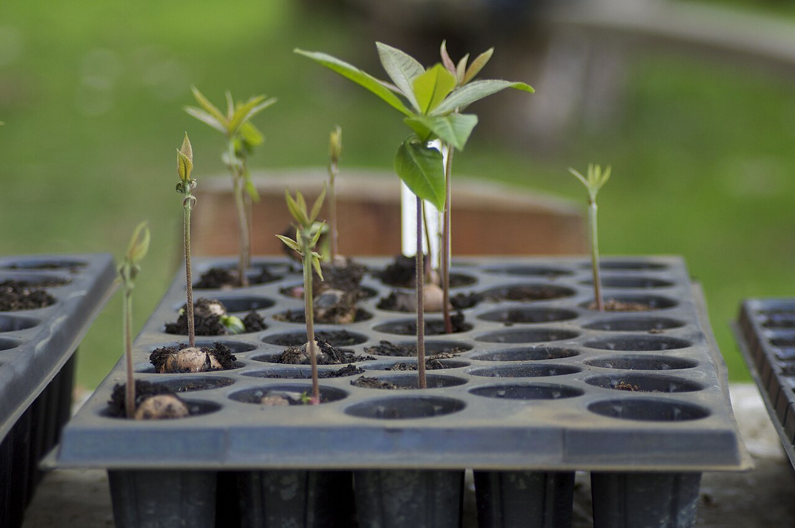

植物生长素（下）：合成、运输与生理作用
本期导读
植物生长素（下）· 运输 · 低促进高抑制

视频原话 · 导读3 句
- 同学们好！这节课梳理人教版选择性必修一第五章第一节的下半部分——生长素的合成、运输与生理作用。10.1s
- 这一部分是植物激素的重中之重，高考常考极性运输、生长素浓度曲线、顶端优势和根的向地性。9.8s
- 我们按九个考点梳理，每个考点都讲清楚怎么考、怎么做。5.5s
生长素的合成01#
芽
幼嫩的叶
发育中的种子
- 色氨酸
- 一系列反应 →生长素（IAA）
易错
生长素不是蛋白质；合成部位抓住“幼嫩”“发育中”
视频原话3 句
- 考点一，生长素的合成。生长素主要的合成部位是芽、幼嫩的叶和发育中的种子。8.3s
- 在这些部位，色氨酸经过一系列反应，转变成生长素。5.4s
- 易错：生长素是由色氨酸转变来的小分子有机物，不是蛋白质；记合成部位，抓住“幼嫩”和“发育中”两个关键词。10.7s
生长素的运输02#
| 类型 | 部位 | 方向 / 方式 |
|---|---|---|
| 极性运输 | 胚芽鞘、芽、幼叶、幼根 | 形态学上端 → 形态学下端；主动运输 |
| 非极性运输 | 成熟组织 | 通过输导组织 |
| 横向运输 | 尖端等部位 | 单侧光、重力等单向刺激引起 |
易错
极性运输方向由形态学上下端决定，与重力无关
考法：缺氧、加呼吸抑制剂 → 极性运输受抑制（主动运输耗能）
考法：缺氧、加呼吸抑制剂 → 极性运输受抑制（主动运输耗能）
视频原话5 句
- 考点二，生长素的运输，分三种。3.8s
- 极性运输：在胚芽鞘、芽、幼叶和幼根中，生长素只能从形态学上端运输到形态学下端，不能反过来。极性运输是一种主动运输。13.3s
- 非极性运输：在成熟组织中，生长素可以通过输导组织进行非极性运输。7.4s
- 横向运输：在尖端等部位，单侧光、重力等单一方向的刺激，会使生长素横向运输。8.3s
- 易错：极性运输的方向由形态学上下端决定，与重力无关。考法：缺氧或者加入呼吸抑制剂，极性运输会受到抑制，因为它是主动运输，需要消耗能量。15.2s
生长素的分布03#
各器官都有，相对集中在生长旺盛的部位
胚芽鞘
芽和根尖的分生组织
形成层
发育中的种子和果实
考法
合成多和分布多的部位大体一致：幼嫩、生长旺盛；衰老组织中较少
视频原话3 句
- 考点三，生长素的分布。生长素在植物体各器官中都有分布，但相对集中地分布在生长旺盛的部位。10.1s
- 比如胚芽鞘、芽和根尖的分生组织、形成层、发育中的种子和果实等处。7.2s
- 考法：生长素合成多和分布多的部位大体一致，都是幼嫩、生长旺盛的部位；衰老的组织中生长素较少。10.3s
生长素的生理作用04#
细胞水平
促进细胞伸长生长
诱导细胞分化
诱导细胞分化
器官水平
促进侧根和不定根发生
影响花、叶和果实发育
影响花、叶和果实发育
- 生长素
- →与生长素受体特异性结合
- →信号转导
- →诱导特定基因表达
易错
生长素是传递信息的分子：不直接参与细胞代谢，不提供能量，不起催化作用
视频原话5 句
- 考点四，生长素的生理作用。3.1s
- 在细胞水平上，生长素能促进细胞伸长生长，诱导细胞分化。6.2s
- 在器官水平上，它影响器官的生长和发育，比如促进侧根和不定根的发生，影响花、叶和果实的发育。9.5s
- 生长素发挥作用时，首先要与细胞内的生长素受体特异性结合，引发一系列信号转导，进而诱导特定基因的表达。10.5s
- 易错：生长素是传递信息的信号分子，它不直接参与细胞代谢，既不提供能量，也不起催化作用。9.6s
低促进、高抑制05#
最高点 → 最适浓度
A、B两点：浓度不同，促进效果相同
C点：既不促进也不抑制；C点以后才是抑制
易错
横轴以上都是促进：最适浓度右侧下降段只是促进作用减弱，不是抑制
视频原话5 句
- 考点五，生长素作用的特点：一般情况下，浓度较低时促进生长，浓度过高时抑制生长。9.0s
- 看曲线：横轴是生长素浓度，纵轴是促进或抑制的程度，曲线最高点对应的是最适浓度。9.1s
- 在最适浓度两侧，存在促进效果相同的两个不同浓度。5.3s
- 曲线与横轴的交点，表示这个浓度既不促进也不抑制；超过这个浓度，才是抑制。7.8s
- 易错：曲线在横轴以上都是促进，最适浓度右侧下降的那一段，只是促进作用减弱，不是抑制。9.2s
不同器官的敏感度06#
敏感程度：根 > 芽 > 茎
最适浓度：根 10−10，芽 10−8，茎 10−4（mol/L）
10−6 mol/L：促进茎，对芽几乎无影响，抑制根
考法
同一浓度对不同器官作用可能不同；双子叶比单子叶敏感，幼嫩细胞比衰老细胞敏感
视频原话4 句
- 考点六，不同器官对生长素的敏感程度不同：根最敏感，芽其次，茎最不敏感。7.9s
- 看三条曲线：根的最适浓度约为10的-10次方 mol/L，芽约为10的-8次方，茎约为10的-4次方。10.8s
- 同一浓度，比如10的-6次方 mol/L的生长素，促进茎的生长，对芽几乎没有影响，却抑制根的生长。9.6s
- 考法：同一浓度对不同器官的作用可能不同；另外，双子叶植物一般比单子叶植物对生长素更敏感，幼嫩的细胞比衰老的细胞更敏感。12.9s
顶端优势07#
→
去掉顶芽：侧芽发育成侧枝
顶芽优先生长，侧芽受抑制
顶芽的生长素向下运输，积累在侧芽 → 浓度过高 → 抑制
顶芽浓度低 → 促进：体现低促进、高抑制
应用：棉花打顶、果树修剪
易错
离顶芽越近的侧芽受抑制越明显；去顶芽后切口放含生长素的琼脂块，侧芽仍受抑制
视频原话5 句
- 考点七，顶端优势：顶芽优先生长，侧芽生长受到抑制的现象。6.6s
- 原因：顶芽产生的生长素向下运输，在侧芽部位积累。侧芽对生长素比较敏感，浓度过高，生长受到抑制。11.2s
- 而顶芽处生长素浓度较低，促进生长。所以顶端优势体现了生长素低浓度促进、高浓度抑制的特点。10.0s
- 应用：去掉顶芽，侧芽处的生长素浓度降低，侧芽就能发育成侧枝，比如棉花打顶、果树修剪。9.6s
- 易错：离顶芽越近的侧芽，生长素浓度越高，受抑制越明显。去掉顶芽后，如果在切口处放含生长素的琼脂块，侧芽仍然受抑制。12.9s
根向地与茎背地08#
茎（不敏感）：近地侧浓度高 → 促进更强 → 背地生长
根（敏感）：近地侧浓度高 → 抑制；远地侧浓度低 → 促进 → 向地生长
考法
根的向地性、顶端优势 → 低促进、高抑制；茎的背地性、向光性 → 只体现促进
视频原话5 句
- 考点八，把幼苗横放，根会向地弯曲生长，茎会背地弯曲生长。6.3s
- 原因：在重力作用下，生长素发生横向运输，近地侧的生长素浓度高于远地侧。8.2s
- 茎对生长素不敏感：近地侧浓度高，促进作用更强，生长得快，所以茎背地生长。8.0s
- 根对生长素敏感：近地侧浓度高，反而抑制生长；远地侧浓度低，促进生长，所以根向地生长。9.5s
- 考法：根的向地性和顶端优势，都体现了低浓度促进、高浓度抑制；而茎的背地性和向光性，只体现了促进作用。10.8s
验证极性运输09#
结论：生长素只能从
形态学上端 → 形态学下端
形态学上端 → 形态学下端
解题方法
接收块放在去尖端胚芽鞘一侧看是否弯曲；设置倒置组，排除重力的影响
视频原话5 句
- 考点九，实验：验证生长素的极性运输。4.4s
- 取一段胚芽鞘，在形态学上端放含生长素的琼脂块，形态学下端放空白琼脂块。一段时间后，下面的琼脂块中含有生长素。12.6s
- 把这段胚芽鞘倒过来，让形态学下端朝上，在上面放含生长素的琼脂块，结果下面的琼脂块中检测不到生长素。10.7s
- 结论：生长素只能从形态学上端运输到形态学下端。5.6s
- 解题方法：检测琼脂块中有没有生长素，可以把它放在去尖端的胚芽鞘一侧，看是否弯曲；必须设置倒置的一组，才能排除重力的影响。12.5s
易错速查✓
先自己判断，再点按钮查看对错与解析。
- 1生长素主要在芽、幼嫩的叶和发育中的种子中合成说法正确。
- 2极性运输的方向由重力决定说法错误：由形态学上、下端决定
- 3最适浓度右侧曲线下降的一段表示抑制说法错误：仍在横轴以上，是促进作用减弱
- 4根对生长素的敏感程度大于茎说法正确。
- 5茎的背地性体现了高浓度抑制生长说法错误：只体现促进作用
- 6去掉顶芽可以解除顶端优势说法正确。
看准横轴上下，促进抑制不混淆！
视频原话 · 易错速查5 句
- 最后，用六道判断题检验一下。3.6s
- 生长素主要在芽、幼嫩的叶和发育中的种子中合成？对。极性运输的方向由重力决定？错，由形态学上、下端决定。12.6s
- 最适浓度右侧曲线下降的一段表示抑制？错，只要在横轴以上，就是促进作用减弱。根对生长素的敏感程度大于茎？对。12.4s
- 茎的背地性体现了高浓度抑制生长？错，只体现促进作用。去掉顶芽可以解除顶端优势？对。10.2s
- 九个考点串起来：芽和幼叶合成生长素，极性运输从上到下，作用特点是低促进、高抑制，根最敏感、茎最不敏感。掌握这些，生长素就能稳稳拿分！我们下期再见！16.8s
图片来源
图片来源：Wikimedia Commons —— Lequerik《Positive phototropism in Quercus humboldtii seedlings》CC BY-SA 3.0
Photo: Lequerik, CC BY-SA 3.0